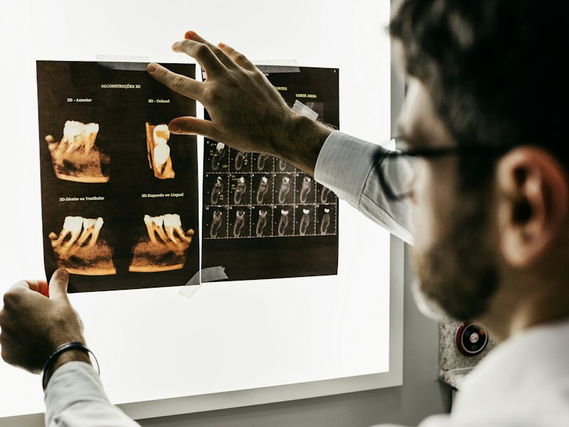
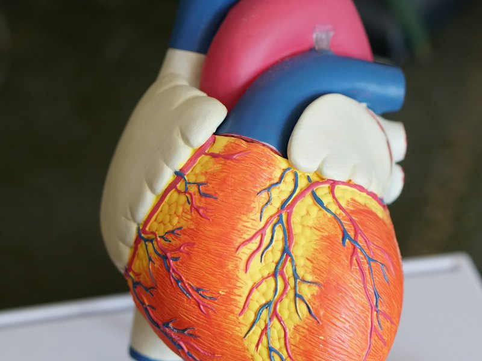
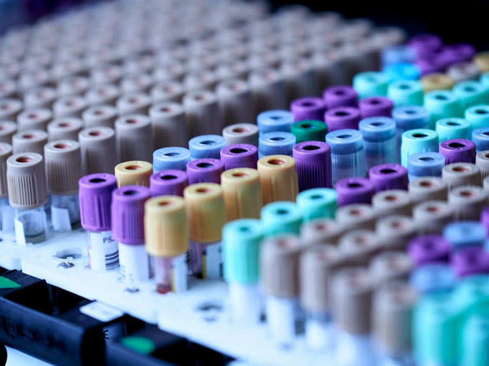

Library
Study Resources
Notes, summaries, slides and practical guides filed by unit — shared by students who sat the same exam last year.
Notes filed by unit, past-paper practice, study groups for every unit you're taking and a community of medical students who've sat the same exams — all in one bright, simple place.
Six tools, one account — organised the way your course is: by year, semester and unit.
Notes, summaries, slides and practical guides filed by unit — shared by students who sat the same exam last year.

Exam BankWork through questions one at a time and see the explanation the moment you answer.

UnitsEvery unit you're taking gets its own feed with the classmates taking it too.
Anatomy, surgery, public health and more — ask questions, share tips, find your people.
Find a classmate by @username and message them. Organising a 9pm revision call takes seconds.

NewsA short daily read on internships, guidelines and research that matters to Kenyan healthcare.
Groups are temporary, knowledge is permanent — everything shared in a unit stays in the library for the year below you.
Pick your university, programme and year. Choose a username your classmates can find.
You land in a library and study groups that already know what you're studying.
Upload notes, answer questions and help in comments to earn MedPoints.
The notes that get you through first year shouldn't live on one person's laptop, in a group chat that disappears after exams. MedLink keeps them for everyone who comes next.
Create your profile, pick this semester's units and start with a library that already knows what you're studying.
Create your free profile